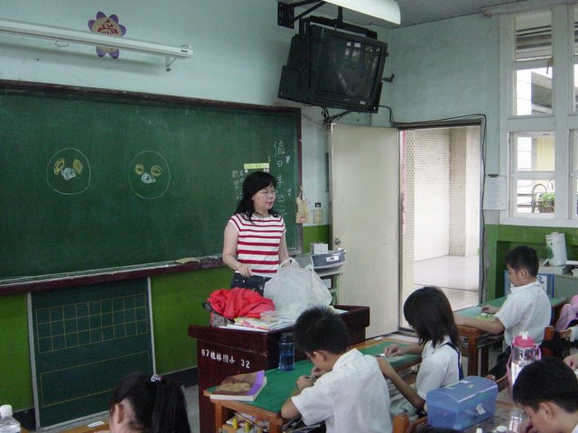
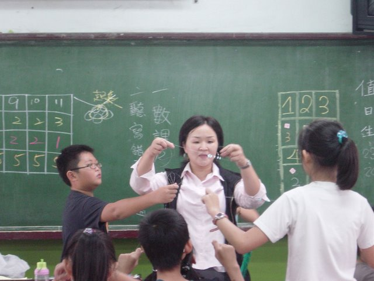

資源運用
資源運用
|
|
一、依據：
1.藉班親合作，親師共同發揮所長，營造更優質的教學環境。
2.鼓勵家長發揮專業潛能，豐富多元教學內容，並於晨光時間進行教學活動。
二、日期：本學年每星期五上午8：05至8：45。
三、地點：五年一班教室。
四、參加人員：本班家長【裕杰的媽媽、尚霖的媽媽】。
五、晨光教學實施：
1.邀請班親媽媽每星期二、四上午7：50至8：40到班級做晨光教學活動。
2.實施方式以美勞教學、唐詩教學、說故事、才藝教學等多元化進行。
3.期末製作感謝狀。
5.作品欣賞公佈於班級網頁。
六、實施寫真：
裕杰的媽媽於晨光時間進行黏土捏塑活動教學
http://picasaweb.google.com.tw/klps501/PEzZNB#

尚霖的媽媽於晨光時間進行串珠教學。
http://picasaweb.google.com.tw/klps501/rtOtxI#
